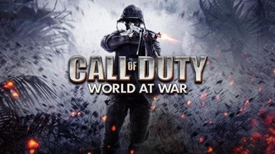
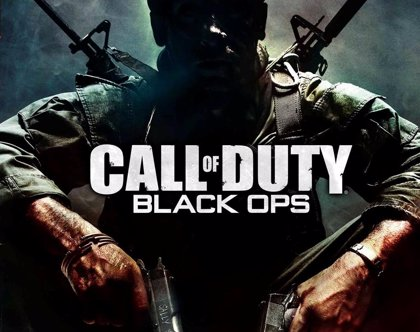
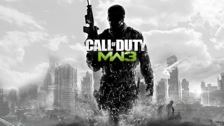
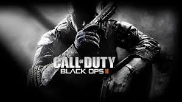
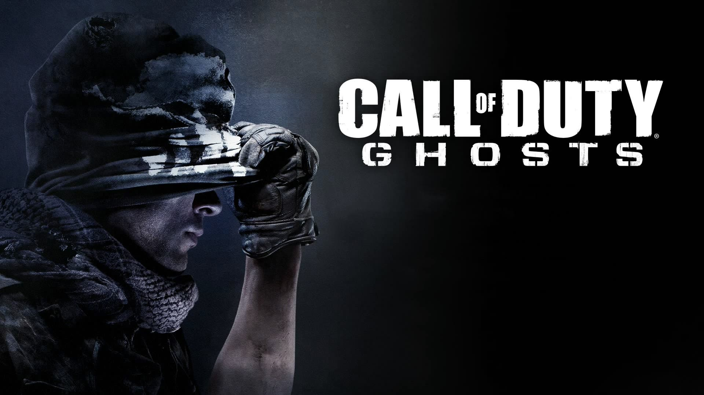

 Es un videojuego de disparos en primera persona desarrollado por Treyarch y distribuido por Activision. Fue publicado para Microsoft Windows, Wii, PlayStation 3 y Xbox 360 en Norteamérica el 11 de noviembre de 2008, en Australia y Nueva Zelanda el 12 de noviembre de 2008, y en Europa el 14 de noviembre de 2008. Cabe decir que en este juego se da inicio a la saga Black Ops. La ambientación de World at War se sitúa durante la Segunda Guerra Mundial,410 asimismo, incluye algunas batallas como Peleliu, Okinawa y la batalla de Berlín.10 El juego lo protagonizan tres personajes:10 C. Miller, un marine estadounidense que participa en el frente del Pacífico;10 Dimitri Petrenko, un soldado del Ejército Rojo, concurriendo en la batalla de Stalingrado con el sargento Viktor Reznov, personaje con el cual mantendrá una amistad durante toda la trama;John Locke, un artillero estadounidense durante la batalla de Okinawa, resulta ser el último personaje jugable, no obstante, aparece en solo una misión del juego.Como en otras ediciones de la serie, el videojuego es de disparos en primera persona de estilo bélico, y el ambiente cerrado y lineal se sigue manteniendo, al igual que otros títulos de la serie, debido a que cada misión es necesaria para progresar a través del juego y desbloquear más contenido sobre esta misma.World at War posee un modo multijugador en línea con distintos mapas y un modo cooperativo en línea de la campaña.
| Juegos | consolas | año | caratula |
|---|---|---|---|
| Call of Duty Black Ops | Play station 3 | 2010 |  |
| Xbox360 | |||
| Wii | |||
| Nintendo DS | |||
| Call of Duty Modern Warfare 3 | Play station 3 | 2011 |  |
| Xbox360 | |||
| Wii | |||
| Nintendo DS | |||
| Call of Duty Black Ops 2 | Play station 3 | 2012 |  |
| Xbox360 | |||
| Wii U | |||
| Microsoft Windows | Call of Duty Ghosts | Play station 3 | 2013 |  |
| Xbox360 | |||
| Play station 4 | |||
| Xbox One |